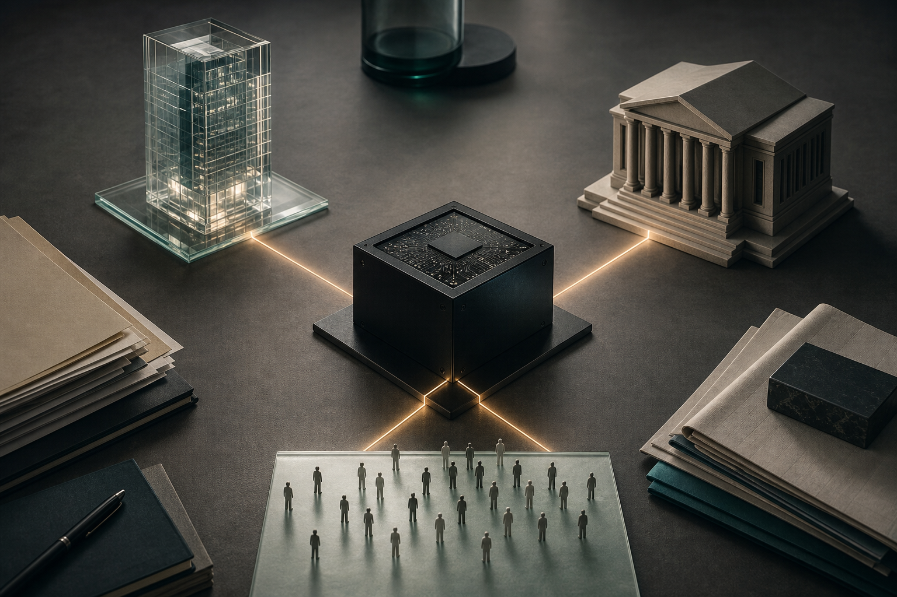

這場訪談最值得讀的地方，不在於 Dario Amodei 是否比其他 AI 執行長更謹慎，也不在於 Anthropic 是否終於坐上產業中心。真正的主題是：如果 AI 是一條「平滑的指數曲線」，那麼人類社會最危險的反應，可能不是無知，而是忽冷忽熱的恐慌。
速度，是這個故事的第一個角色
訪談一開始，主持人問他睡得如何。Amodei 的回答很生活化，卻立刻把氣氛帶進高壓狀態：他說自己正在學習如何在「不尋常的壓力」中休息。接著他用相對論式的比喻描述 AI 產業：彷彿你每天醒來，地球已經過了更多天。昨天要處理兩天的事，今天變三天，明天變四天。
這不是誇張的科技宣傳語，而是他理解 AI 的核心框架：世界不是突然轉彎，而是長期沿著同一條曲線上升，只是人在曲線變陡時才感覺到「一切突然發生」。他說 Anthropic 的成長、公司與世界的反應，都像這條「平滑指數曲線」。
因此，他批評兩種反應：一種是假裝沒事，另一種是今天突然大喊要全面恐慌。成熟決策不是在否認與驚慌之間擺盪，而是在曲線上升時，讓防護、治理與商業判斷同步升級。
為什麼 Anthropic 選擇企業，而不是讓人上癮的消費產品
當主持人問到 Claude Code 與企業市場，Amodei 把商業模式說成價值選擇。他的理由很直接：大型模型極其昂貴，必須有商業模式；但如果商業模式與價值觀衝突，公司最後不是背叛價值，就是變得無關緊要。
他把消費網路與廣告驅動模式放在對照面：注意力、停留時間、成癮與內容垃圾，會把產品帶往錯誤方向。相較之下，他認為企業客戶更重視長期信任、可靠交付與真實效用。藥物設計、能源效率、教育、開發中國家健康、經濟成長，這些他眼中的 AI 正向用途，大多發生在企業、研究機構、非營利組織與政府之間。
這裡的關鍵不是「企業比較高尚」，而是誘因比較不容易直接懲罰節制。對一般讀者來說，這是一個重要提醒：AI 產品的危險不只來自模型能力，也來自它被放進哪一種收入模型。
白領工作不是消失或不消失，而是重新分配得夠不夠快
影片中最貼近大眾的段落，是他談工作。Amodei 曾警告 AI 可能在一到五年內衝擊大量入門白領工作；在這次訪談中，他補上上下文：這不是「末日即將來臨」的口號，而是「我們需要預先處理」的風險估計。
他描述的可能未來很矛盾：GDP 快速成長，但失業、低薪、低度就業與不平等也同時上升。原因是 AI 先提高人的生產力，接著在某些任務上可能直接比人更適合執行。Anthropic 內部的軟體工程師也正在經歷這種轉變：一開始是 AI 幫人寫更多程式，後來某些工作可能變成 AI 直接完成。
但他沒有把未來說成單向崩塌。他提到新的需求會出現，例如前線部署工程師、應用 AI 解決方案架構師，以及需要技術能力又能與客戶溝通的人。更廣義地說，物理世界、人際關係、醫療照護、價值判斷與指揮 AI 的角色，可能會變得更重要。
這段對一般人最實用的翻譯是：不要只問「我的工作會不會被取代」，而要問「我現在的價值，是不是只存在於可被模型快速複製的資訊處理」。如果答案是肯定的，就要把自己移向領域判斷、人的信任、實體世界、跨部門協調與問題定義。

最棘手的不是模型會不會用於戰爭，而是誰來畫紅線
訪談最尖銳的部分發生在國防段落。主持人追問：一位有反戰背景的人，為何讓 Anthropic 成為最早與美國國防部合作、進入機密網路的 AI 公司之一？Amodei 的回答是地緣政治。他提到俄羅斯入侵烏克蘭、中國攻台風險，以及一個「重新抬頭的威權陣營」。
他支持美國及盟友擁有更強情報與防禦能力，卻同時主張 AI 不能被用於完全自主的致命武器。他承認，供應商不可能逐一決定政府每一次軍事行動是否可用某項技術；但他認為公司仍可設定高層次界線，避免最危險的用途被正常化。
這也是訪談的道德難題：AI 若能協助情報分析，可能降低誤判、嚇阻衝突；但若被放進缺乏監督的殺傷流程，也可能加速錯誤。Amodei 用《奇愛博士》式的自動化核戰比喻提醒：真正可怕的不是有工具，而是工具在雙方誤判時自動替人按下按鈕。
對讀者而言，這段不是要你站隊某家公司，而是看見一個新現實：AI 公司的產品決策，已經不只是商業決策，也可能成為國家安全制度的一部分。
Mythos：把漏洞補起來，還是把武器交出去？
Amodei 談到 Anthropic 內部一個代號為 Mythos 的模型，說它在資安上出現巨大躍升：不只是找出漏洞，還能把漏洞轉成可利用的攻擊路徑。部分早期試用的公司甚至要求 Anthropic 不要公開釋出，因為它太強。
他的辯護是「先給防守方」。如果模型可以找出大量軟體漏洞，那麼最好的情境是先讓防守者修補系統，再逐步開放能力；否則同樣能力若先落入攻擊者手中，整個網路生態會變得更脆弱。訪談中他提到，Mythos 曾在 Firefox 找到 271 個新漏洞，也在私人公司程式庫中找到更多尚未公開的問題。
但這套說法也暴露出 AI 治理的困境：誰有資格決定什麼叫「防守方」？政府建議放慢、客戶催促開放、公司承受商業損失，所有人都可能有合理理由。Amodei 說，這不是社群媒體上幾句「行銷話術」能解決的問題，而是社會必須共同承擔的取捨。
私人公司掌握公共權力，政府也不能毫無制衡
當主持人問「政府為什麼不直接接管」時，Amodei 承認這是嚴肅問題。他指出，核武、網際網路、GPS、手機等過去強大技術，最初都與政府或公共研發體系密切相關；但 AI 是第一個主要由私人部門推進、政府較晚進場的強大技術。這在他看來是不穩定，也危險的。
他不支持政府直接接管 Anthropic，卻主張公司與政府都必須被制衡。他提到 Anthropic 的 long-term benefit trust 結構，可以任命或移除多數董事，理論上也能間接撤換 CEO。這是把公共治理的一部分元素放進公司制度裡。
另一方面，他也認為政府需要被國會、司法與透明制度約束。AI 需要基本監管，例如模型發布前測試、稽核與紅線。他真正反對的是極端擺盪：前一天還說任何透明度與出口管制都會摧毀創新，隔天看到危險又喊國有化。對他來說，穩健的答案是逐步加碼的治理，而不是從放任跳到接管。
中國、開源模型與「AI 會站在哪一邊」
Amodei 對中國的態度在訪談中很明確。他擔心的不只是競爭，而是高科技威權體制把 AI 用於監控、壓制異議與跨境影響。他提到香港、維吾爾人，以及威權國家結合 AI 可能形成「1984 或更糟」的未來。
他也談到中國開源模型。短期看，較落後的模型仍可能有經濟價值；但在他眼中，前沿模型的價值會因能力差距而持續放大。真正讓他擔心的是：今天最前沿的資安能力，十二個月後可能出現在可下載的落後模型裡。這不是單純的產品競爭，而是能力外溢的安全問題。
這裡的核心問題是：AI 會成為民主社會擴大自由的工具，還是威權體制擴大控制的工具？Amodei 的答案不是技術自動會選邊，而是公司、政府與社會行動會把它推向某個方向。
信任不是形象，而是一串付出代價的決定
訪談尾聲，主持人問了一個所有 AI 公司都必須面對的問題：你們打造了極其強大的東西，也會從中獲得巨大利益，為什麼外界應該信任你？
Amodei 沒有要求外界先信任。他反而說，從不信任開始是合理的，因為矽谷已經失去太多信任。Anthropic 想證明自己不同，只能靠行動。他列舉延遲 Claude 2、切斷某些中國相關模型存取、Mythos 不立即公開釋出等例子，說這些都讓公司承受實際商業成本。
但這篇摘要最應保留的不是他的自我辯護，而是判斷標準：在 AI 時代，值得信任的公司不是從來不犯錯的公司，而是願意在有利可圖時仍設限、願意被制度約束、願意把危險說清楚，並讓外界檢視它是否真的付出代價。
來源說明
原始影片：Inside the Mind of Anthropic CEO Dario Amodei | The Circuit | Extended Interview，Bloomberg Originals，影片 metadata 顯示發布日期為 2026-06-17，長度約 70 分 04 秒。
本文依 YouTube 英文自動字幕整理，並以影片 metadata 與字幕時間軸核對主題順序。自動字幕可能含有姓名、產品名或專有名詞誤聽，因此本文採摘要與意譯，不作逐字引用。
本文圖片為 AI 生成的編輯視覺，不是影片截圖，也不代表受訪者本人或 Bloomberg / Anthropic 官方素材。